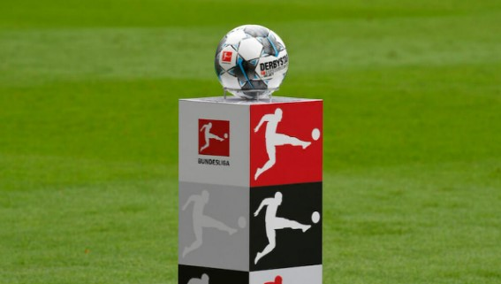
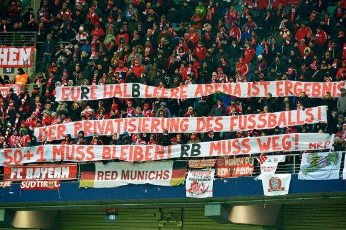

현대 축구는 거대한 상업화된 시장을 갖고 있습니다.
TV 중계권료, 선수의 이적으로 인한 이적료, 이외 부대 수입은 축구 시장의 규모를 유례없는 크기로 성장시켰습니다.
지난 시즌인 22/23시즌 독일 분데스리가의 중계권료가 총 1,210만 유로
(한화 약 154억 원)에 달한다고 하니 그 규모가 실감이 되시나요?
그러다보니 현대 축구에서는 구단을 누가 소유하고 있는지도 꽤나 중요한 부분을 차지합니다.
단적인 예시로, 지역의 축구팀인 대전 하나 시티즌을 예로 들 수 있습니다.
'축구특별시'로 불리던 과거의 영광과는 달리 2부 리그에서 헤매던 대전 시티즌은 4년 전 하나은행으로의 매각을 통해 1부 리그 복귀와 더불어 다시 한 번 전성기를 재현하려 하고 있습니다.
하지만 갑작스런 재정난과 같은 구단주의 경기 외적 요소들은 구단의 운영에 직결됩니다.
그로 인해 이전에는 볼 수 없었던 구단주, 구단 그리고 팬의 갈등이 스포츠계에서 많이 발생하기도 합니다.
구단주의 잘못된 경영은 결국 구단을 해하고, 팬들을 고통스럽게 하는 상황을 만들게 됩니다.
그렇기 때문에 구단의 인수는 양날의 검과 같이 장단점이 너무나도 명확합니다.
이런 흐름을 일찍이 파악한 독일 축구 협회는 한 가지 규정을 신설합니다.
과연 그 규정은 무엇이었을까요?
1998년, 독일 축구 협회는 ‘50+1 규정’을 신설했습니다.
최상위 2개 리그에 적용되는 이 규정은 개인 혹은 기업이 한 구단의 지분을 절반 이상 소유할 수 없도록 규제하고 있습니다.
이 규정을 통해 얻을 수 있는 이점은 크게 두 가지가 있습니다.
우선 첫 번째로, 외부에서의 무분별한 투자를 막을 수 있습니다.
최대 주주가 50%의 지분을 얻지 못함으로써 다른 국가의 구단들에 비해 이사회를 통한 민주적인 행정 절차가 가능했으며, 구단주의 독단적인 운영이 불가능해 구단은 대다수의 사람들이 원하는 방향으로 운영될 수 있습니다.
두 번째로 보다 팬 중심적인 운영이 가능해졌습니다.
독일의 축구 리그는 타 국가보다 팬 친화적인 리그로 유명합니다. 티켓값이 저렴한 것을 시작으로, 이사회 절차에서 팬들의 의견이 많이 반영돼 지역의 팬들이 원하는 구단을 만들어 나갈 수 있습니다. 이 결과, 독일 축구 리그의 관중 동원력은 세계 최고 수준을 유지하고 있습니다.
[당신들의 절반이 빈 경기장이 그 결과다. 축구의 비상업화!
50+1 규정은 유지돼야 한다! RB(레드불)은 나가라!]
이렇게 성공적으로 시행되고 있는 규정이지만 독일의 구단들은 2010년대 말을 기점으로 50+1 규정 존폐에 대한 논의를 이어오고 있습니다.
과연 독일 축구계는 왜 규정의 폐지를 논하는 걸까요?
첫 번째 이유는 규정의 실효성입니다.
1998년 규정이 신설되기 전에 이미 기업의 소유였던 구단은 50+1 규정의 범위 외에 있었습니다. 이 뿐만 아니라 RB 라이프치히의 경우, 규정의 허술함을 파고 들어 2009년 레드불의 구단 인수 이후 편법을 통해 사실상 단일 기업의 구단으로서 운영되고 있기 때문에 50+1 규정의 실효성에 대한 의문을 제공했습니다.
두 번째 이유는 국제 경쟁성의 지속적인 하락입니다.
최근 독일 축구는 월드컵을 비롯한 국제 대회에서 실망스러운 성적을 계속해서 기록했습니다.
투자자에게 많은 지분을 제공하지 못하는 점은 시간이 지날 수록 리그가 활용할 수 있는 재산 규모에 제한을 만들어 결국 자국 리그를 시작으로 독일 축구 자체에 걸림돌이 됐다는 의견이 힘을 얻고 있습니다.
또한 구단의 성장을 방해한다는 의견도 있었습니다.
타 국가의 구단은 인수를 통해 구단의 시설과 수준이 크게 상승하는 경우도 있었지만, 50+1 규정은 그 과정을 시작하기 어렵게 만들었습니다.
결국 해당 규정으로 인해 상위 몇 구단을 제외한 중하위권 구단이 더 발전하지 못한다는 의견도 등장하고 있습니다.
이렇게 독일만의 특색있는 규정인 50+1 규정은 장단점을 확실히 갖고 있습니다.
구단의 안정성과 팬들과의 유대감을 증진시킬 수 있는 측면에서는 장점을 갖고 있지만,
구단의 경쟁성과 시대의 흐름을 고려했을 땐 다소 보수적인 규정으로 평가를 받고 있습니다.
2023년 초부터 이어진 50+1 규정과 관련된 논의 끝에 지난 7월 13일, 독일의 경쟁규제기관인 분데스카르텔암트는 당분간 규정의 폐지는 없을 것임을 알렸습니다.
여러분들의 생각은 어떠한가요?
축구는, 더 나아가 다른 스포츠 혹은 문화는 어떻게 만들어져야 한다고 생각하시나요?
영화 상영과 파티도 했습니다. 영화를 보며 남아메리카 전통 옥수수빵인 아레파, 인도의 처트니 소스, 비건 간식 등을 먹을 수 있었죠. 파티에서는 창의적이고 맛있는 다양한 비건 요리들을 맛볼 기회가 주어졌습니다. 지역 와인을 시음하는 파티나 무알코올 음료를 시음하는 파티 등 다양한 파티가 있었어요.
과연 50+1 규정은 팬들의 축구를 지키기 위한 노력일까요?
아니면 시대의 흐름을 읽지 못한 틀에 박힌 규정일까요?
다음 주제로 찾아뵙겠습니다!